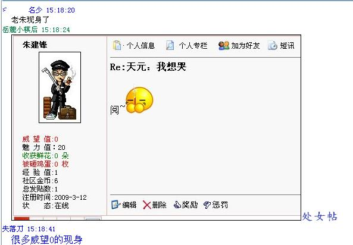
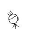

肯德基举办了一个世界比赛
#1 肯德基举办了一个世界比赛 作者：爱她珍惜她 发表时间：2009-6-12 6:10:38
肯德基举办了一个世界CS大赛，给每个有肯德基的国家几个名额，中国肯德基的老总决定了：“把中国这边的名额留给我们的内部员工吧。”于是国内顶尖的职业玩家站出来了：“我们也要去为什么不给我们？好歹也搞个选拔啊，当时为什么还发通知要参赛的联系你们？”老总：“你联系我了？我靠就随便找个人发个你资料给我就完了？你想参加是你的事，要参加还得符合我的要求，比如要加入我们公司。。。反正你是没和我沟通过。还要我主动联系你？那我看我不联系你到底我们谁更急。。。。”然后全国SC玩家声讨：“这个国际性的比赛，你派你公司急个员工去丢脸啊？你那几个员工实力又没XXX强，难道这个是内定的？”老总：“当然内定，肯德基办的比赛就由肯德基公司决定，内定你有什么意见？”［ 游戏人间 于 2009-6-12 14:17:24 时奖励此帖[金币加 20 威望加1］
［ 游戏人间 于 2009-6-12 14:17:26 时奖励此帖[金币加 20 威望加1］
#2 Re:肯德基举办了一个世界比赛 作者：无尽 发表时间：2009-6-12 7:08:00
楼上虚构这个例子只是形似而性质不一样。
肯德基是一个盈利性私营企业，RIF是以在全世界推广连珠组织、相关各项活动为任的国际民间组织。
请去看看RIF章程，里面提到，它的会员是需要被所在国家承认的才有资格，现在RIFCHINA既不被中国棋院承认，假如也不被中国民间五子棋届承认的话，它还代表什么？
虽然会费是NWLS交的，但不是交了钱就为所欲为，有相关的权利与义务，RIFCHINA只是RIF在中国的代表，并不是私人组织，那威俱乐部那就的确是私人组织了
请去参看RIF主页：CHAPTER 2 - RIF members, their rights and duties.
诚然，他们现在仍有这个决定权，但却深深刺伤了许多五子棋爱好者的心，即便现实无法改变，但仍要予以谴责。
#3 Re:肯德基举办了一个世界比赛 作者：舍露里 发表时间：2009-6-12 7:18:21
得了，再怎么引用也没用了，他们心中只有rights，没有duties#4 Re:肯德基举办了一个世界比赛 作者：爱她珍惜她 发表时间：2009-6-12 7:41:57
2楼，我随便申请个什么帐号都有些条款什么的，关键这个条款的效用有多大？有法律效用？我稍微没达到哪个条款就封我号？肯德基的广告下面都有句话：一切以实物为准#5 Re:肯德基举办了一个世界比赛 作者：无尽 发表时间：2009-6-12 7:46:49
楼上，我们现在仍是谈理，你无法说理就只能靠强辞夺理。
执行方面的问题不是我这里要说的。
#6 Re:肯德基举办了一个世界比赛 作者：聊城蓝剑 发表时间：2009-6-12 7:48:59
希望肯德鸡来山东投资举办五子棋比赛我们热烈欢迎~~~~~~~~~~#7 Re:肯德基举办了一个世界比赛 作者：爱她珍惜她 发表时间：2009-6-12 7:54:47
这个东西本来官方就不认可。。。。官方认可的话中国有那么穷？派些人代表国家出去比赛还要自费，还要赞助。。。。官方认可的话各省各市的选拔推荐，然后全国选拔代表中国出去。。。。你以为RIF就是什么世界大组织了？在我觉得恐怕真及不上肯德基，你自己太把他当回事了。。。。。。#8 Re:肯德基举办了一个世界比赛 作者：无尽 发表时间：2009-6-12 7:56:43
唉，说了那么久也不明白问题所在啊~~#9 Re:肯德基举办了一个世界比赛 作者：聊城蓝剑 发表时间：2009-6-12 7:57:55
谁对谁错，做事的总被说闲话的攻击，着就是站着说话不腰疼~
#10 Re:肯德基举办了一个世界比赛 作者：无尽 发表时间：2009-6-12 7:59:46
但是做错了，却不能以此为借口，是性质问题而不是执行问题。
你要先看看别人的态度啊，看完这么多文章才好发言，不然有失偏颇。
不要把个别针对个人的不友善发言当作全体
#11 Re:肯德基举办了一个世界比赛 作者：无尽 发表时间：2009-6-12 8:01:29
9楼再刷版扣罚威望#12 Re:肯德基举办了一个世界比赛 作者：爱她珍惜她 发表时间：2009-6-12 8:07:15
=======********===请*认*真*阅*读=====********=============
本站所有内容对注册用户均开放，未注册用户某些资料无法下载！
1、鼓励使用中文名注册！请文明注册！谢绝不文明的词语，我们共同维护！
2、本站欢迎您参与交流，共同活跃论坛气氛！谢绝“看看”、“路过”、“顶”等无实际内容的回复！
3、注册用户必须魅力值达到5才能回复帖子，而魅力值5约等于5天的访问记录。
4、注册用户的威望值必须大于等于1才能发表帖子。
5、威望值的获得只有本站超级版主及管理员有权赋予！可以到总置顶帖申请！
6、新注册用户请务必认真浏览此帮助贴：http://www.iwzq.com/ShowPost.asp?ThreadID=3129
看第2条。。。。。朱建锋在下面的帖子回了个阅，还加了威望了，我现在要根据条款来讨个说法。。。。。
我就想知道很多条款什么的你觉得有法律效用没？？是，你找到了和条款不符的地方，然后呢？有用么？有用的话把朱的威望转到我这边吧。。。。。。。
#13 Re:肯德基举办了一个世界比赛 作者：无尽 发表时间：2009-6-12 8:10:29
那是0+1，楼上再度转移问题视线，而且问题性质也不一样。
起码我是坚持了这个原则，如果你发现哪位超版乱加的，去跟有志投诉即可。
#14 Re:肯德基举办了一个世界比赛 作者：爱她珍惜她 发表时间：2009-6-12 8:16:56
我就是打个比方。。。。。我也没必要看别人得个威望还要去投诉的吧。。。。。RC估计也是说你有什么不满去找RIF主席投诉即可#15 Re:肯德基举办了一个世界比赛 作者：无尽 发表时间：2009-6-12 8:18:20
所以我就说，我们现在是讨论这事合不合理，而不是执行问题，执行问题是后话。#16 Re:肯德基举办了一个世界比赛 作者：爱她珍惜她 发表时间：2009-6-12 8:27:22
你觉得不合理只是你觉得他是个正规组织。。。。。你个人出钱，找几个同学，打上中国队的旗号，去和国外几个民间社团搞个足球世界杯，只要是你出钱，你那个“中国队”找什么臭脚全由你，我认为很合理啊。#17 Re:肯德基举办了一个世界比赛 作者：无尽 发表时间：2009-6-12 8:43:25
怎么理解正规组织？那你先去看看RIF章程。。。 不明白的话有机会问问它们到底是什么。。。#18 Re:肯德基举办了一个世界比赛 作者：启蒙 发表时间：2009-6-12 10:13:40
那胖请速速现出原型！#19 Re:肯德基举办了一个世界比赛 作者：失落刀 发表时间：2009-6-12 10:15:32
| 爱她珍惜她 棋友， |
我就想知道很多条款什么的你觉得有法律效用没？？是，你找到了和条款不符的地方，然后呢？有用么？有用的话把朱的威望转到我这边吧。。。。。。。”
给他的威望是属于0+1的威望。是我加的，应该是符合要求的。并为了避免误会特意写明：威望0+1.
这个应该很好理解的。
不说这些了，你认真看看无尽的跟帖，他是很明事理的人，希望你也能够。
#20 Re:Re:肯德基举办了一个世界比赛 作者：岳麓小棋后 发表时间：2009-6-12 10:27:44

呵呵，每个ID的处女帖被超斑看到都会这么一下的
#21 Re:Re:肯德基举办了一个世界比赛 作者：爱她珍惜她 发表时间：2009-6-12 13:32:35
引用：
原文由 失落刀 发表于 2009-6-12 10:15:32 :“看第2条。。。。。朱建锋在下面的帖子回了个阅，还加了威望了，我现在要根据条款来讨个说法。。。。。
爱她珍惜她 棋友， 我就想知道很多条款什么的你觉得有法律效用没？？是，你找到了和条款不符的地方，然后呢？有用么？有用的话把朱的威望转到我这边吧。。。。。。。”
给他的威望是属于0+1的威望。是我加的，应该是符合要求的。并为了避免误会特意写明：威望0+1.
这个应该很好理解的。
不说这些了，你认真看看无尽的跟帖，他是很明事理的人，希望你也能够。
真无聊，咬住XX当香肠。。。。。威望对我来说有多大用？我有必要看到别人得威望眼红？举例都不明白？你要一直咬住这个说？那我跟你说嘛，自己看第2条什么意思，抛开加威望不说，这个贴有实际意义？类似这个的没有实际意义的贴论坛里少？那是不是违反了一些条款？该怎么做？封号？删贴？还是怎么给与处罚？你这个最后一句话。。。。你不觉得你就是找骂？语文学的好是吧？让大家看了都是那么个意思，如果我骂了你你就说你不是那意思，博取大家的同情，最烦这种人。。。。。。
［ 失落刀 于 2009-6-12 13:53:53 时惩罚此帖，发帖者[金币减20 威望减1］
［ 失落刀 于 2009-6-12 13:54:06 时惩罚此帖，发帖者[金币减20 威望减1］
惩罚到-1.你换ID吧，这个ID被惩罚了。
#22 Re:肯德基举办了一个世界比赛 作者：岳麓小棋后 发表时间：2009-6-12 13:35:47
LS你已经当局者迷了，好好静思吧
另外：最近注册的小号，你们都有革命投机主义的嫌疑，希望这场争论不要仅仅只沦为泄愤的工具。。。
刚所说的，仅仅是指你上面这个帖子，你主帖子的内容我没去看，所以不知道你们吵什么，单就你这个帖子的粗鲁言语，已经违背了很多原则，所以叫你静思，无恶意。
#23 Re:肯德基举办了一个世界比赛 作者：爱她珍惜她 发表时间：2009-6-12 13:38:45
这个比赛我根本就不看重。。。。。我发的贴里也明显表示我根本不看重RIF。。。。。我有什么好当局的啊？？？？#24 Re:Re:肯德基举办了一个世界比赛 作者：爱她珍惜她 发表时间：2009-6-12 13:44:45
引用：他章程写的再好再正规。。。。。是官方认可的不？写的章程有法律效率没？？？？写的东西很多是写给别人看的。。。。跟你说肯德基广告下面那句话：一切以实物为准
原文由 无尽 发表于 2009-6-12 8:43:25 :
怎么理解正规组织？那你先去看看RIF章程。。。 不明白的话有机会问问它们到底是什么。。。
#25 Re:肯德基举办了一个世界比赛 作者：不知 发表时间：2009-6-12 13:45:39
爱她珍惜她 这位朋友
..爱五子的规矩是.所有新号都会给1威望让其有发帖权.谢谢.
因为不是每个人进来都会看置顶帖的.所以一般没申请威望就进来回帖的朋友会由版主给予1威望
失落刀不过是想告诉你她加这个威望的原因.可能她没表达好导致你误解.
#26 Re:肯德基举办了一个世界比赛 作者：爱她珍惜她 发表时间：2009-6-12 13:50:48
另外：最近注册的小号，你们都有革命投机主义的嫌疑，希望这场争论不要仅仅只沦为泄愤的工具。。。
你对小号有意见？那我告诉你这个是我大号。。。。我之前一直注册不上号，小号大号又有多大关系呢？你是认号不认理？认识的认说什么都是对的，和你朋友唱反调的一律是错的？论坛看贴的人也不少，我说的什么不对的来人指出我们讨论就是了，还是新号就闭嘴，不要发表意见了？
#27 Re:肯德基举办了一个世界比赛 作者：萧何 发表时间：2009-6-12 13:54:44
楼主在无理取闹［ 失落刀 于 2009-6-12 14:02:52 时奖励此帖[金币加 20 威望加1］威望0+1.
#28 Re:肯德基举办了一个世界比赛 作者：失落刀 发表时间：2009-6-12 13:56:00
已经惩罚ta了。#29 Re:肯德基举办了一个世界比赛 作者：岳麓小棋后 发表时间：2009-6-12 13:56:58
你要这么理解也行，。。。
这次的这么多新号你们最好好好静思下你们为什么注册？
#30 Re:肯德基举办了一个世界比赛 作者：傻兔兔 发表时间：2009-6-12 14:08:23
什么东西都有个圈子，只不过你在IWZQ牛你就可以为所欲为，扣我负威望，我是段然，我跟N多人说过我注册不上号。。。。确实是最近才注册上的号，什么事就事论事不就完了？一定要是有名望的高手说的才是对的，像我们这种没人认识的跟你们有名望的唱反调就封杀？我错在哪你把道理说出来，我完全看不见你们说我哪错了，一个说了句我是无理取闹，另一个说已经处罚了。。。。怎么个无理取闹法？就因为我把自己的观点说出来？这个不算黑幕？这个不是内定？发生在你自己身上你觉得理所应当。RC也是这样做的，他在RIF就是牛，就是可以扣你负威望让你不能参赛，就是不需要告诉你什么理由，内定就是内定。。。。。。。你们都是一样的人，只是他的权利在RIF，你的权利在IWZQ#31 Re:肯德基举办了一个世界比赛 作者：不知 发表时间：2009-6-12 14:12:00
 段然你被内定之后也感觉到气愤了?那很好.你已经体验到棋情小天和大家的心情了.恭喜你~
段然你被内定之后也感觉到气愤了?那很好.你已经体验到棋情小天和大家的心情了.恭喜你~
#32 Re:肯德基举办了一个世界比赛 作者：岳麓小棋后 发表时间：2009-6-12 14:12:45
刚所说的，仅仅是指你上面这个帖子，你主帖子的内容我没去看，所以不知道你们吵什么，单就你这个帖子的粗鲁言语，已经违背了很多原则，所以叫你静思，无恶意。
#33 Re:肯德基举办了一个世界比赛 作者：傻兔兔 发表时间：2009-6-12 14:14:59
我感到气愤的不是被内定，而是明明和别人的做法没什么差别，一边觉得自己很正义一边指责别人。。。。。。。#34 Re:肯德基举办了一个世界比赛 作者：歇菜了 发表时间：2009-6-12 14:16:55
 段老师淡定,别怪失落刀和无尽了
段老师淡定,别怪失落刀和无尽了
失落刀也淡定一点,我们要统一战线,骂死那胖子
#35 Re:肯德基举办了一个世界比赛 作者：傻兔兔 发表时间：2009-6-12 14:17:14
RC也是这样说啊。。。。可能只是我们缺少沟通，或者是你们的资料我没收到，你的资料不完善。。。无恶意#36 Re:肯德基举办了一个世界比赛 作者：不知 发表时间：2009-6-12 14:19:12
 段然你要不要我发你今早上爱五子的第一句话(就是被大鱼封帖那句)给大家看看?
段然你要不要我发你今早上爱五子的第一句话(就是被大鱼封帖那句)给大家看看?
#37 Re:肯德基举办了一个世界比赛 作者：四川连珠魂 发表时间：2009-6-12 14:19:37
提议恢复段然同学的威望。感觉版主扣威望不能这样 轻易吧，观点不同很正常，现在又不是 封建专制的年代
你好，我解释下，第一早上他发了一个谩骂帖子，被大鱼屏蔽了的。36楼朋友对此也指出了。（他的帖子以及本楼的帖子，我看了后，就建议他向明事理得人学习）。第二：“真无聊，咬住XX当香肠。。。。。“这一句话我认为很低级趣味，因此扣威望为-1.第三。我是扣罚他威望之后才看到后面的其他人跟帖批评他的，因此，我解释了一句”已经处理了“，这个有时间先后记录的。另，超版、版主做错，可以投诉的----失落刀
#38 Re:Re:肯德基举办了一个世界比赛 作者：五林外传 发表时间：2009-6-12 14:23:10
引用：你以为RIF就是什么世界大组织了？在我觉得恐怕真及不上肯德基，你自己太把他当回事了。。。。。。
原文由 爱她珍惜她 发表于 2009-6-12 7:54:47 :
这个东西本来官方就不认可。。。。官方认可的话中国有那么穷？派些人代表国家出去比赛还要自费，还要赞助。。。。官方认可的话各省各市的选拔推荐，然后全国选拔代表中国出去。。。。你以为RIF就是什么世界大组织了？在我觉得恐怕真及不上肯德基，你自己太把他当回事了。。。。。。

#39 Re:Re:肯德基举办了一个世界比赛 作者：五林外传 发表时间：2009-6-12 14:24:52
引用：
原文由 四川连珠魂 发表于 2009-6-12 14:19:37 :
提议恢复段然同学的威望。感觉版主扣威望不能这样 轻易吧，观点不同很正常，现在又不是 封建专制的年代
#40 Re:肯德基举办了一个世界比赛 作者：岳麓小棋后 发表时间：2009-6-12 14:35:07
再看了遍：
论坛禁止水帖，是所有优秀论坛都倡导的，注册内容里所写的谢绝已经很好表明这个立场了，但并不是说水贴就该惩罚，适当的水帖还是允许的，我们要禁止的是那种为水而水的帖子
回了个水贴，还加了威望，这是两码事。
小棋后自认没做过你那什么一边很正义一边指责人的行为，而你自己的言辞，你自己去看看，一个路过的人看了都会感觉到你很**
就算你主帖的内容很有道理，你也不能用这样的方式来回应吧。。。
#41 Re:肯德基举办了一个世界比赛 作者：浪人 发表时间：2009-6-12 14:35:34
KFC?开封菜?
#42 Re:Re:肯德基举办了一个世界比赛 作者：斜月 发表时间：2009-6-12 14:58:33
引用：
原文由 傻兔兔 发表于 2009-6-12 14:08:23 :
什么东西都有个圈子，只不过你在IWZQ牛你就可以为所欲为，扣我负威望，我是段然，我跟N多人说过我注册不上号。。。。确实是最近才注册上的号，什么事就事论事不就完了？一定要是有名望的高手说的才是对的，像我们这种没人认识的跟你们有名望的唱反调就封杀？我错在哪你把道理说出来，我完全看不见你们说我哪错了，一个说了句我是无理取闹，另一个说已经处罚了。。。。怎么个无理取闹法？就因为我把自己的观点说出来？这个不算黑幕？这个不是内定？发生在你自己身上你觉得理所应当。RC也是这样做的，他在RIF就是牛，就是可以扣你负威望让你不能参赛，就是不需要告诉你什么理由，内定就是内定。。。。。。。你们都是一样的人，只是他的权利在RIF，你的权利在IWZQ
木头别激动，这里威望为0的只能回帖不能发贴，见到威望为0的管理员大都会给加到1，之后用户就可以发文了，这个加威望不是因为回文质量好，所以给朱建锋加那个威望是这个原因。这个规则我也刚发现，原来上的其他论坛没有见过。你说给朱建锋加威望不合理，可能是没注意到这个这里特有的规则，有些用户认为合理，但是没具体解释，只是让你看论坛规则，估计你还没看到这个规则，根源也就这么点误会
至于有人说最近注册的小号的目的猜测我觉得指的是专门为QT事件注册的，QT事件是从9号开始的，你1号就注册了，你肯定没这么强的预测能力，也不会知道这个内幕，所以你注册的目的和QT门无关。
扣威望和内定还是有区别的，QT事件是先号召棋手报名，然后再把报名的人踢出去，小天也说他们的目的本来就不是报名而是给棋院施压，但这里扣威望至少没这么复杂，固然管理员存在特权，判罚中会有其主观判断，但出发点还是论事，没有什么明显的个人目的，也不是因为你再QT事件观点不同扣的。
PS:我是上个月被你“内定”的二台^_^
［ 失落刀 于 2009-6-12 18:16:08 时花20金币送鲜花一朵］
#43 Re:Re:肯德基举办了一个世界比赛 作者：无尽 发表时间：2009-6-12 14:59:52
引用：
原文由 傻兔兔 发表于 2009-6-12 14:14:59 :
我感到气愤的不是被内定，而是明明和别人的做法没什么差别，一边觉得自己很正义一边指责别人。。。。。。。
失落刀给你的惩罚是闹事惩罚，不要跟rifchina的混为一谈，明明自己没理说，然后借题发挥。
早说了，如果你觉得不合理，你可以找有志，干嘛在这里说呢，就是有意无意搅浑事情。为什么那么多争论经常没有结果，因为最后都被引向其他方向了。
#44 Re:肯德基举办了一个世界比赛 作者：傻兔兔 发表时间：2009-6-12 16:10:29
我究竟那个观点你不满意你指出讨论。。。。你说的有理我有必要怎么样？我的立场也没有支持过RIF啊，只是让我觉得你不容存在与你们不同的观点。。。。。就算我有什么观点你不同意，甚至大家都不同意，不可以讨论？我一再看见有人说我强词夺理，说那么久不明白问题所在，无理取闹，明明自己没理借题发挥。。。。。。到底是我哪句话那个观点不对？还是所有我的发现都让你感觉不舒服？失落刀给我闹事惩罚，我闹什么事了？不说这些了，你认真看看无尽的跟帖，他是很明事理的人，希望你也能够。她说这句话就是完全正确的，我不同意这句话就是在闹事？这句话如果是有人跟你说段然是个明事理的人，希望你也能过，你怎么看？
还别说我没骂他，我就真骂了就有权扣我负威望？（骂人扣负威望？还是因为骂的是很有权威的人？关键我骂了没？）就有这么点权利都准备只手遮天了，和RC的做法有什么区别啊？
#45 Re:肯德基举办了一个世界比赛 作者：有志青年 发表时间：2009-6-12 16:12:05
前天参加区级机关年青干部培训班，最后有个辩论会，我有幸成为165人中的8分之。
进入辩论了，好激动，对方那个观点缪的一塌糊涂，我就打个比喻，再刺激一下他。
呵呵，这时候是自己最得意的时候，很容易只有自己，而顾及不到他人。容易说错话的！
啥事情先反思自己，再建议他人
将rc事件中各方观点做了一个摘要，大部分人在讨论中还是非常理智的，谢谢大家。
#46 Re:肯德基举办了一个世界比赛 作者：不知 发表时间：2009-6-12 16:15:02
165人的8份之一是多少?
#47 Re:肯德基举办了一个世界比赛 作者：流逝 发表时间：2009-6-12 16:38:19
。。。。。。。。。。。。。。。。。。。。。。。。。。。。。俺没觉得段然的话有什么过分的地方，虽然他唧唧歪歪了一大堆我没看明白
［ 游戏人间 于 2009-6-12 17:36:19 时花50金币砸了你一个臭鸡蛋］
#48 Re:肯德基举办了一个世界比赛 作者：无尽 发表时间：2009-6-12 18:07:59
44楼：我和你的讨论到17楼为止，后面就很混乱了，并不属于关于本帖主题的范畴，只是在吵架，我也没很仔细看。失落刀扣罚威望是因为你说难听的话，如果有理，何必动气说粗话呢？（包括早上被删的。。）有话慢慢说，说清楚。
加给朱建锋的威望本是小事，论坛存在给0威望的ID+1这条规则的（无论他说的话是否有实质内容，在本论坛第一次发帖或者去申请就给），你对此不满可以跟有志反应，但这与rifchina剥夺中国其他选手参加QT的机会不是一回事，加威望并没有损害任何人的利益。是你没搞懂吧？所以我就觉得有意无意在搅浑。。。
#49 Re:肯德基举办了一个世界比赛 作者：岳麓小棋后 发表时间：2009-6-12 18:14:32
其实我不知道你们在争吵什么，第一次发帖，只是看到了，进来证明下为什么给水帖加威望
第二次发帖，则是因为段同学的帖子有不文明的字眼，想规劝他静静下，论战姿势已经很不好看了。。。
#50 Re:肯德基举办了一个世界比赛 作者：流逝 发表时间：2009-6-12 18:29:09
死大鱼出来让我砸几个蛋#51 Re:Re:肯德基举办了一个世界比赛 作者：掌棋如烟 发表时间：2009-6-15 18:05:41
引用：
原文由 流逝 发表于 2009-6-12 16:38:19 :
。。。。。。。。。。。。。。。。。。。俺没觉得段然的话有什么过分的地方，虽然他唧唧歪歪了一大堆我没看明白
恩，同感..不就误会一个威望的问题么，通篇看过去也就有一处字眼不太雅观，
大家举例说事别说人嘛。。。楼主举例KFC的例子说个事儿，至于KFC放在这有多恰当好象不是该争论的重点吧。。。
你KFC中国老总要内定选手，就叫“中国KFC”选手，别代表全中国选手，因为你代表不了，还玩了一手小把戏想做的好看一点，不就这么个事儿么。。大家都明白说的什么，再来辨别KFC跟某组织的区别~~哎，实在潜水不下去了，出来喊一句跑题太远啦
PS：我也想注册个小号... 学好数理化，走遍天下都不怕，若有小号和马甲，任何顾虑也不怕。。。
#52 Re:肯德基举办了一个世界比赛 作者：茗弈風雲 发表时间：2009-6-16 17:55:14
呵呵 都是一样的 声讨